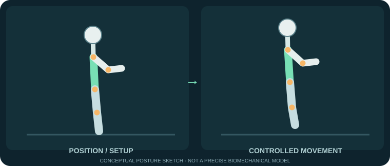

Exercise encyclopedia / Legs
Calf raise
Rise onto toes slowly, then lower under control with a stable support if needed.
Movement illustration

How to perform it
- Stand on a stable floor near a fixed support.
- Rise onto the balls of the feet without rolling outward.
- Pause briefly at a comfortable high point.
- Lower heels at a controlled pace.
Breathe continuously and use a range that feels controlled and comfortable for your body.
Why this movement matters
Lower-body patterns share work across hip, knee and ankle musculature. Joint angles, depth, support and individual body proportions change the emphasis.
Progression checkpoint
Try one-leg variations after steady bilateral work.
Equipment and safety
Use a support and comfortable depth when balance, knee or ankle tolerance is a limiting factor.
Problem solving
Common mistakes & corrections
Correction: Slow down and reduce repetitions.
Correction: Use hand support and a smaller range.
Training progression
Find your next variation
This is one possible route from a lower-demand version to a more demanding version. You can switch back whenever needed; these steps are not fixed tests or guarantees.
- Calf raise
Readiness guidance: Try one-leg variations after steady bilateral work.
Build a practice
Where this fits in a program
Calf raise is a legs exercise. Pair it with movements from other patterns over the training week, and choose sets or hold times you can recover from. See the Foundation program for adaptable examples; there is no universally correct repetition target.
Calisthenics Atlas editorial guide · November 2026 · Original conceptual artwork · General audience education